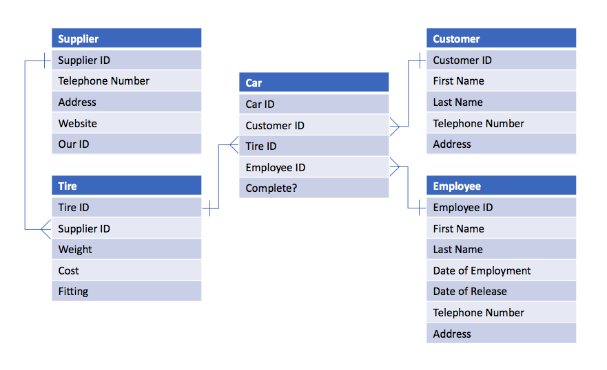
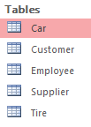
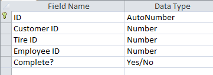
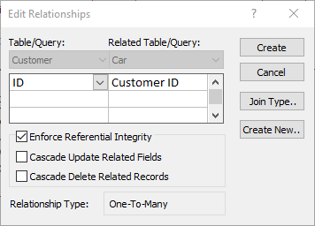
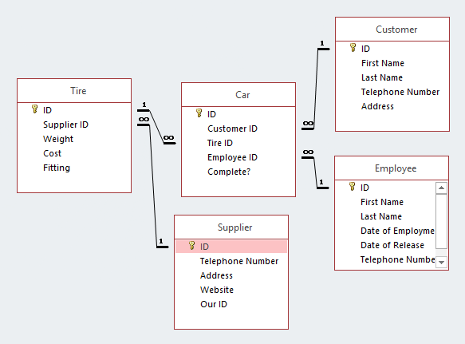

Click here to download the file I made for this, 'Tires.accdb'.
Maholla, my name is Marley Sudbury. This is a page I have written about databases. Becuase, say it with me now, I have no life.
An entity relationship diagram (ERD) is a fundamental part of planning a relational database. This shows the various tables of the database and how they relate to each other. There are two types of relationship in a normalised relational database, one-to-one and one-to-many. Here is an example.
Scenario: A man (say, Pedro) runs a company which puts tires on cars. He orders tires from suppliers, and has a list of customers and cars. Draw an entity relationship diagram (ERD) of a computer based system he could use (disclaimer: I know nothing about how car tires work).
This shows quite clearly the relationship between the various fields in the tables. As you can see, each table has its own 'ID' field, which would be a primary key field (for those who don't know, a primary key is used to uniquely identify each record in a table). The ends of the line with 'crows feet' are the many end of the relationship, whilst the other ends have a '1' put through them. Also, note that the table names are singular, as this is an industry standard.
Although most industry use of databases is done with network technology, such as SQL, for local solutions I find that Microsoft's Access is perfectly acceptable, as it is fully-featured, and hassle-free to set up. It is also free with my Office 365 account, provided by my school ;).
If you aren't using Access, just do your own thing, ma dude. First, let's make a database:

Lovely and empty, just like all databases should be. You won't see anything like this for quite a while now, unless you mess up so bad that you have to start again, which could certainly happen. Now you have to implement your ERD. Make all the tables.
The next step is to set up all the fields for all the tables in design view, something like this:
Don't forget to set the properties for each field! The next thing to do is to implement the actual relationships between the tables. This is in the 'Relationships' section of the 'Database Tools' tab.
And we end up with something like this:
Now it is time to populate the database! Once you have done that, time to move on to the really fun stuff (/s), queries, forms and reports! I want to make a form for adding new cars, and one for adding new employees.
To be honest, this is where my skills with databases run-out. My forms and reports never look good, and they're not going to start to now!